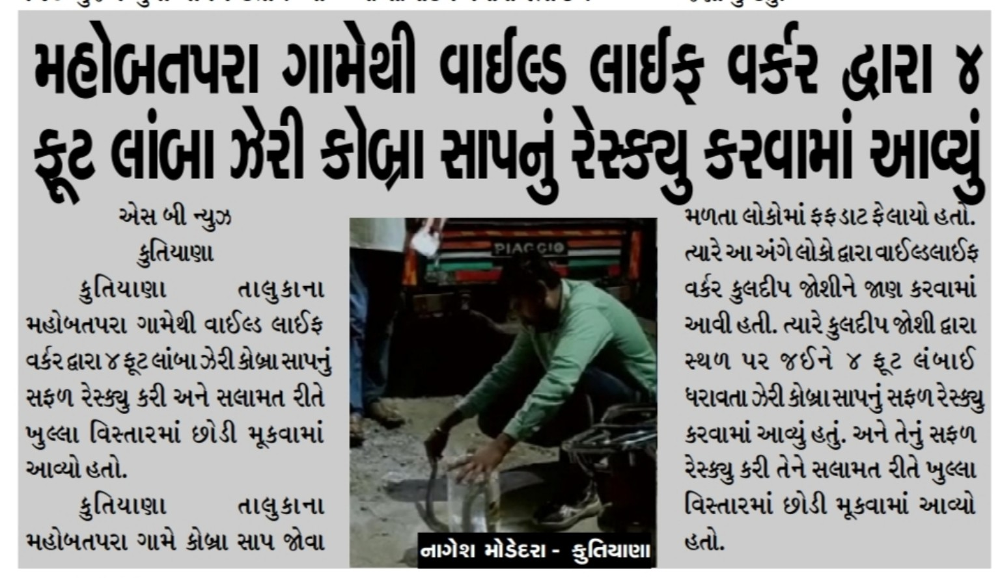
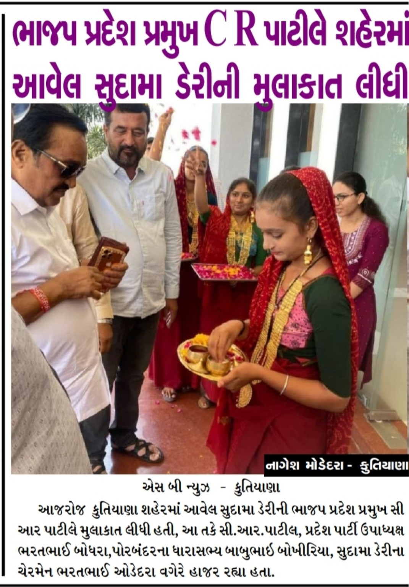
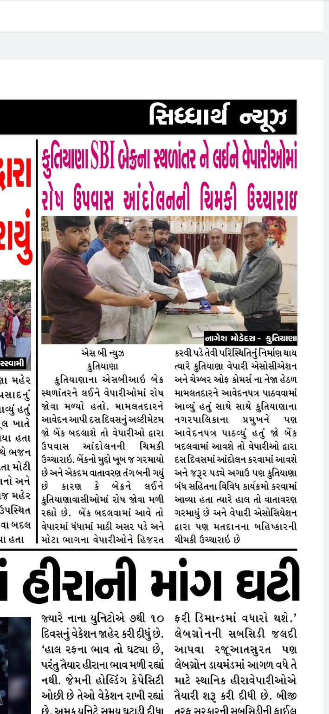
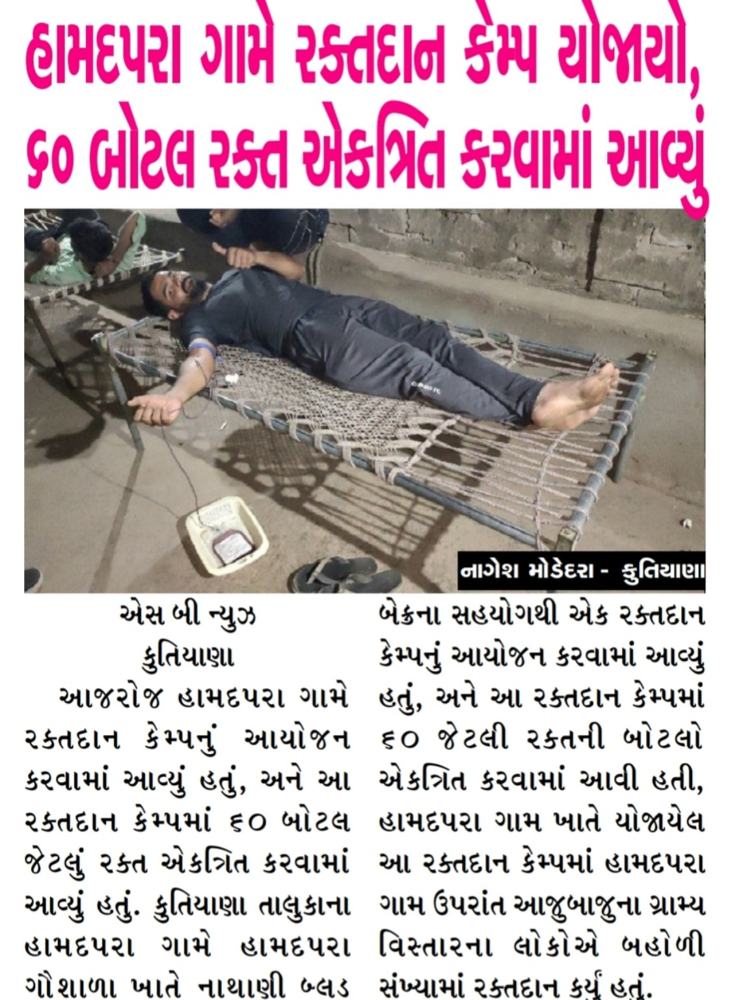
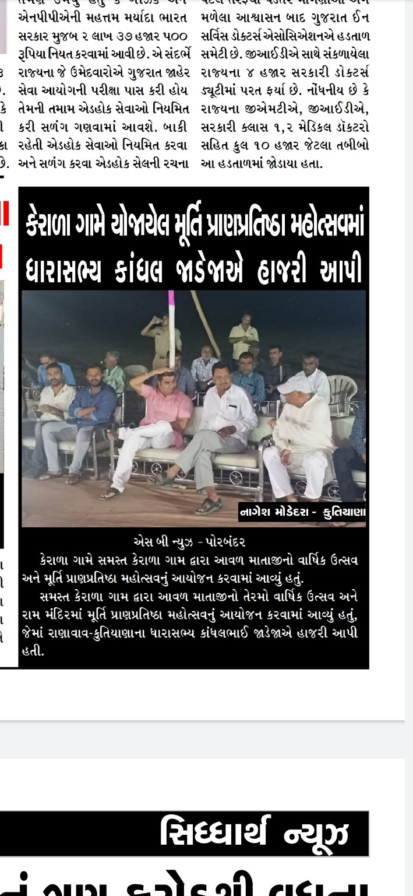

કુતિયાણા અને આસપાસના વિસ્તારોમાંથી સ્થાનિક સમાચાર, જાહેર હિતના મુદ્દાઓ અને ગ્રાઉન્ડ રિપોર્ટિંગ.
પરિચય વાંચોઅખબારી કટિંગ્સનાગેશ મોડેદરા કુતિયાણા, પોરબંદર, ગુજરાત સાથે સંકળાયેલા સ્થાનિક સમાચાર રિપોર્ટર છે. તેઓ કુતિયાણા શહેર, તાલુકા તથા આસપાસના ગ્રામ્ય વિસ્તારોમાંથી સ્થાનિક ઘટનાઓ અને જાહેર હિતના મુદ્દાઓનું રિપોર્ટિંગ કરે છે.
તેમની જાહેર મીડિયા ઓળખમાં સ્થાનિક બનાવો, પોલીસ અને LCB કાર્યવાહી, સરકારી તથા વહીવટી કામગીરી, ગ્રામ્ય પ્રશ્નો, વરસાદ અને કુદરતી પરિસ્થિતિ, સામાજિક મુદ્દાઓ તથા જાહેર હિતના સમાચારનો સમાવેશ થાય છે.
કુતિયાણા તાલુકાના ટીંબીનેશ ગામમાં LCBની કાર્યવાહી અંગે પ્રકાશિત અહેવાલમાં નાગેશ મોડેદરાની સીધી રિપોર્ટિંગ બાયલાઇન આપવામાં આવી છે:
“અહેવાલ: નાગેશ મોડેદરા, કુતિયાણા, પોરબંદર”
સંપૂર્ણ સમાચાર વાંચોઉપલબ્ધ અખબારી કટિંગ્સમાં “નાગેશ મોડેદરા – કુતિયાણા” નામે બાયલાઇનના પુરાવા ઉપલબ્ધ છે.
આ પ્રિન્ટ મીડિયા પુરાવા નાગેશ મોડેદરાની સ્થાનિક સમાચાર રિપોર્ટિંગ સાથેની જાહેર ઓળખનો ભાગ છે.
નાગેશ મોડેદરા નામે કુતિયાણા અને પોરબંદર વિસ્તાર સાથે જોડાયેલ સ્થાનિક સમાચાર રિપોર્ટિંગ જોવા મળે છે.
“નાગેશ મોડેદરા – કુતિયાણા” નામે અખબારી બાયલાઇનના પુરાવા ઉપલબ્ધ છે.
ઓનલાઈન સમાચાર અહેવાલોમાં “નાગેશ મોડેદરા, કુતિયાણા, પોરબંદર” તરીકે સીધી રિપોર્ટિંગ ક્રેડિટ જોવા મળે છે.
તમે આપેલા 5 પેપર/ન્યૂઝ કટિંગ્સ – સંપૂર્ણ ફોટા સાથે

નાગેશ મોડેદરા – કુતિયાણા બાયલાઇન સાથેનો ન્યૂઝ રિપોર્ટ

સ્થાનિક સામાજિક કાર્યક્રમ અને સમાચાર કવરેજ

સ્થાનિક વેપારી અને જાહેર મુદ્દા અંગેનો રિપોર્ટ

સ્થાનિક ઘટના અંગેનો સમાચાર રિપોર્ટ

કુતિયાણા વિસ્તારના કાર્યક્રમનું સમાચાર કવરેજ
@nageshmodedara007
કુતિયાણા વિસ્તાર સાથે જોડાયેલા સમાચાર અને માહિતી માટે Public App પર જોડાયેલા રહો.
📱 Public App ખોલોઆ પેજ નાગેશ મોડેદરાની જાહેર મીડિયા ઓળખ, રિપોર્ટિંગ ક્ષેત્ર અને જાહેરમાં ઉપલબ્ધ મીડિયા પુરાવાઓને એક જગ્યાએ રજૂ કરવા માટે બનાવવામાં આવ્યું છે.
આ પ્રોફાઇલમાં જાહેર સ્ત્રોતોમાંથી ચકાસી શકાય તેવી માહિતીનો ઉપયોગ કરવામાં આવે છે. ભવિષ્યમાં નવા અખબારી કટિંગ્સ, ન્યૂઝ રિપોર્ટ્સ અથવા અન્ય જાહેર મીડિયા પુરાવા ઉપલબ્ધ થાય ત્યારે આ પેજ અપડેટ કરી શકાય છે.